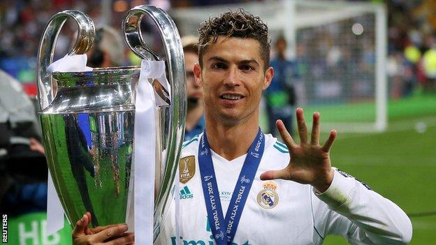

Ronaldos internationale Karriere begann 2003, als er mit nur 18 Jahren von Sporting Lissabon zu Manchester United wechselte. Dort wurde er schnell zu einem der aufregendsten Spieler der Premier League. Unter Trainer Sir Alex Ferguson entwickelte sich Ronaldo zu einem torgefährlichen Flügelspieler mit unglaublicher Geschwindigkeit und Technik. Zwischen 2003 und 2009 gewann er mit Manchester United unter anderem drei Premier-League-Titel, den FA Cup, den League Cup und 2008 die UEFA Champions League.
2009 wechselte Ronaldo für die damalige Rekordsumme von 94 Millionen Euro zu Real Madrid. Dort wurde er endgültig zur Legende: In 438 Spielen erzielte er unglaubliche 450 Tore. Mit Real Madrid gewann er vier weitere Champions-League-Titel, zwei spanische Meisterschaften, zahlreiche Supercups und Klub-Weltmeisterschaften. In dieser Zeit gewann er auch vier seiner fünf Ballon d'Or-Auszeichnungen.
Seine Rivalität mit Lionel Messi prägte die 2010er Jahre und teilte die Fussballwelt. Ronaldo war für seine athletische Spielweise, seine Kopfballstärke, seine Freistösse und seine Führungsqualitäten bekannt. Doch auch abseits des Platzes wurde er durch seine Disziplin und seinen Ehrgeiz bewundert.
2018 wechselte er zu Juventus Turin in Italien. Auch dort blieb er erfolgreich und wurde mehrfach Torschützenkönig der Serie A. Im Jahr 2021 kehrte er zu Manchester United zurück, bevor er 2022 zu Al-Nassr nach Saudi-Arabien wechselte. In der Nationalmannschaft feierte Ronaldo ebenfalls grosse Erfolge: Er ist Rekordtorschütze Portugals und gewann 2016 die Europameisterschaft sowie 2019 die UEFA Nations League.
